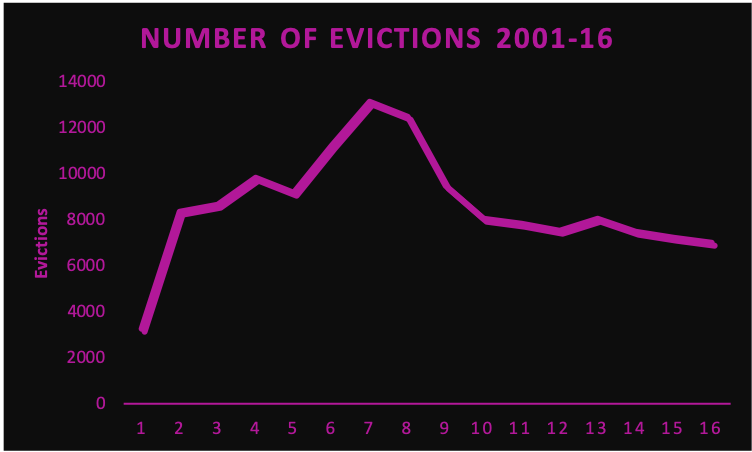
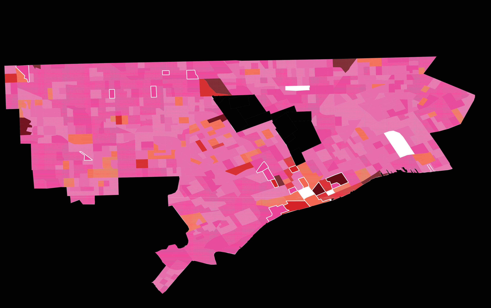
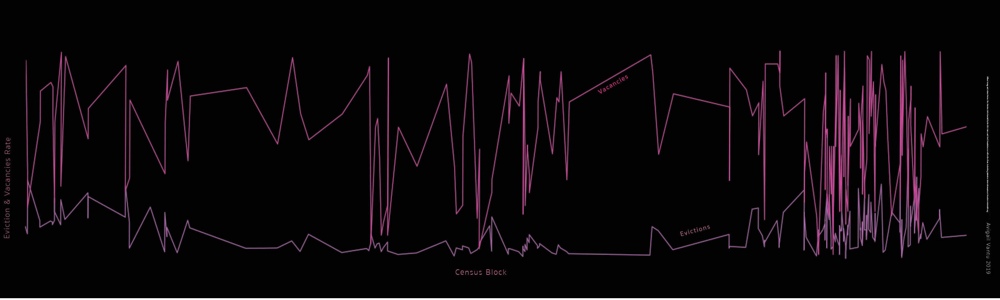

Back at the beginning of the 20th century Detroit, also referred to by many as the “Motor City”, has vastly benefited from the auto industry expansion. As a result, by 1950 the city of Detroit has become the fourth largest city in the US with nearly 1.85 million residents. Throughout the late 1960’s, due to a push for automation and a decentralization of production, Detroit's decline started. Over time the city has gone through massive population decrease to the level of under 700K residents in 2015. These changes resulted in the elimination of large amount of jobs. As a result, more and more residents moved out of the city. Over the past few years, Detroit’s populations continued to decline. This consistent trend resulted in many abandoned structures throughout the city. These structures have become an urban and social issue, affecting neighborhoods’ sense of community and safety. In 2013 the city of Detroit has been granted $250 million in federal aid to demolish structures.
In the same time, many Detroiters have been evicted from their homes. In 2007 the city's evictions reached a peak of 13,139. In 2016 the number of evictions in Wayne county decreased to 7,009. While the city of Detroit experienced overall decrease in housing evictions, each year thousands of families are still uprooted from their communities.
In this project I argue that while tenants should be kept responsible for paying rent and keeping their lease agreements, a targeted assistance from the city could impact families on the cusp of eviction. Furthermore, as the demand for houses is lower than the supply, evicted houses in Detroit are likely to stay inhabited. In some cases these structures will deteriorate to a level of hazardous conditions, and will eventually get demolished.
Based on data from 2014 to 2019 the average price for a residential demolition in Detroit is $17,323. Furthermore, in October 2019 the average rent in Detroit was $1,075 per month. This means that, on average, each housing demolition can be substituted with 16 months of rent assistance. Implementing housing assistance policy for preventing housing evictions in Detroit will be a win-win situation for both the city and for individual households. I created data visualizations to guide policy makers and community members on specific areas that could be targeted for policy interventions.
Detroit Residential Units Surplus Map:
This is a census block level map of Detroits’ evictions and residential vacancies in 2016. The pink-orange-red graduated polygons represent the number of evictions which took place in Detroit in 2016. Pink implies that no evictions occurred in this census tract. In contrast, a red polygon is an indication that a large number of evictions took place in this census block. In addition, white patterned fillings on top of the eviction layer represents the Residential Units Surplus (RUS). The RUS score was calculated by subtracting the number of evictions from the total number of vacancies in each census block in 2016. The denser the white filling gets, the larger the surplus is. For example, the dense-dotted white filed polygons are an indication for many more vacancies than evicted homes in 2016. In contrast, the white outlined polygons have a negative housing surplus. Meaning that this census block has less vacancies than the total number of evicted families. The darker (red or orange) polygons with a white dotted pattern are areas where many evictions could have been potentially avoided in 2016.
2016 Detorit Eviction & Vacancy Rates Per Census Block:
This visualization displays the rates of evictions and vacancies (Y axis) for each individual census block in Detroit (X axis) in 2016. The pink line is the rate of vacancies. The purple line is the rate of evictions in 2016. In most census blocks the rate of vacancies was higher than the rate of evictions. This implies that there were many census blocks which had low demand for housing. However, many of these census blocks still suffered from evictions. In areas where both lines meet, the rate of both evictions and vacancies were the same for the particular census block.